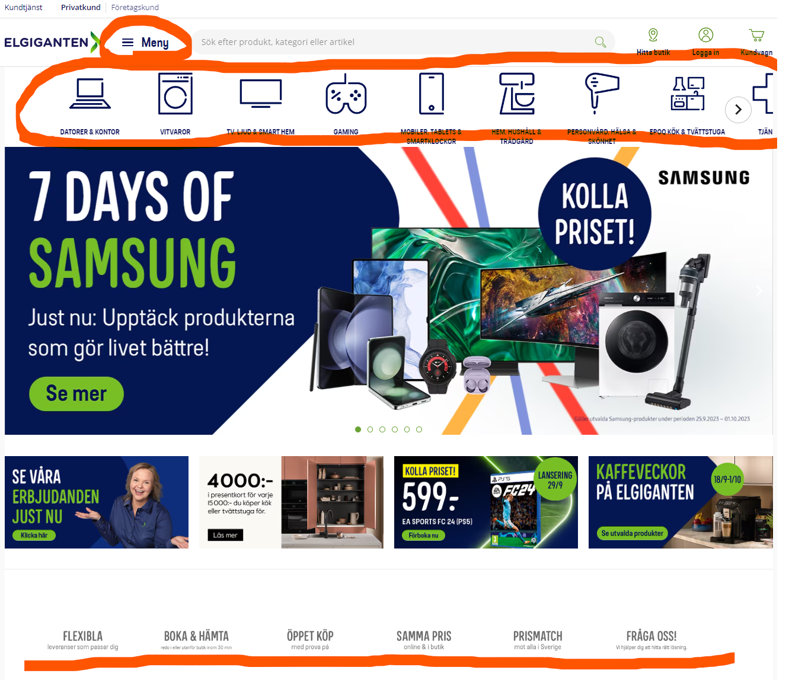

A.
Global navigering handlar om den primära navigeringen på en webbsida. Den globala navigeringen ska alltid finnas tillgänglig så att användaren kan komma åt webbplatsens huvudavdelningar och viktiga sidor oavsett var användaren befinner sig. Kortfattat så handlar det om övergripande navigering på hela webbplatsen.
Lokal navigering avser navigering inom en avdelning/sida. Här är navigeringen med andra ord specifik för just den avdelningen/sidan som användaren befinner sig på. Kortfattat så handlar det om navigering på specifika delar av en webbplats.
B.
Supplementary navigation är navigering som ger användaren alternativa vägar till olika sidor eller kategorier på webbplatsen. Detta är speciellt användbart på webbplatser med många sidor och mycket information, där det annars kan vara komplicerat och långt att nå viss information. Det ger med andra ord användaren fler sätt att ta sig runt och hitta på webbplatsen.
Courtesy navigering är navigerings tillägg som underlättar för användaren, vilket gör det till en bekvämare upplevelse. Det kan exempelvis handla om en “Tillbaka till toppen” knapp eller knappar för att kunna dela något på sociala medier. Denna typ av navigering är generellt inte central för webbplatsens fokus utan finns istället där för att förbättra användarupplevelsen.
C.
När jag letade efter en webbplats med alla fyra typer av navigering så hittade jag Elgiganten. På förstasidan så finns global navigation i toppen, supplementary navigation strax under och längst ner på sidan, i sidfoten, så finns det courtesy navigation i form av länkar till bland annat kontaka oss, personuppgiftspolicy, information om bluffmail och guider och inspiration. Om man exempelvis klickar sig in på kategorin för Datorer & Kontor så kan man direkt se en typ av local navigation.
